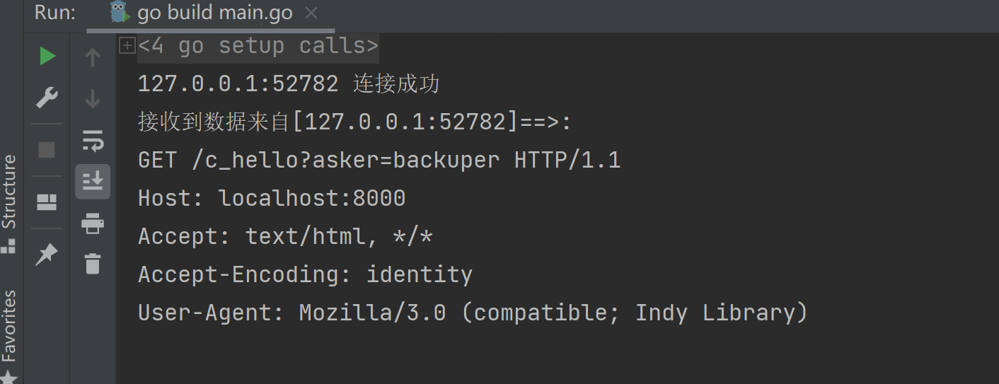
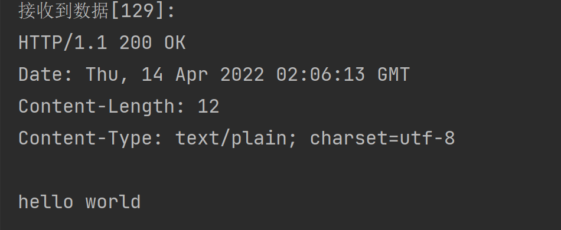

3 HTTP 编程
HTTP 的简单使用
HTTP Server
服务端处理请求和响应
package main
import (
"fmt"
"net/http"
)
func HelloHandler(w http.ResponseWriter, r *http.Request) {
fmt.Fprintf(w, "Hello!") //把返回的内容写入 http.ResponseWrite
}
func main() {
http.HandleFunc("/", HelloHandler)
http.ListenAndServe(":5656", nil)
}
HTTP Client
package main
import (
"fmt"
"io"
"net/http"
"os"
"strings"
)
func get() {
if resp, err := http.Get("http://127.0.0.1:8080"); err != nil {
fmt.Println("err!")
} else {
defer resp.Body.Close()
io.Copy(os.Stdout, resp.Body)
os.Stdout.WriteString("\n")
}
}
func post() {
reader := strings.NewReader("hello server")
if resp, err := http.Post("http://127.0.0.1:8080", "text/plain", reader); err != nil {
fmt.Println(err)
} else {
defer resp.Body.Close()
io.Copy(os.Stdout, resp.Body)
os.Stdout.WriteString("\n")
}
}
func main() {
get()
post()
}
httprouter 的使用
package main
import (
"fmt"
"github.com/julienschmidt/httprouter"
"io"
"net/http"
"os"
)
func getHandler(w http.ResponseWriter, r *http.Request, params httprouter.Params) {
fmt.Printf("Method:%s\n", r.Method)
fmt.Println("request body:")
io.Copy(os.Stdout, r.Body)
fmt.Println()
w.Write([]byte("you "))
}
func main() {
router := httprouter.New()
router.POST("/user/:name/:type/*addr",getHandler)
}
使用 router 编写路由规则，客户端请求的路径应于 router 的路径相对应，在上述代码中的 /user/:name/:type/*addr的含义是：
/user/：必须包含 /user/ 的路径进行请求
/:name/：赋值给name变量
/*addr：后面的参数全部赋值给addr
请求报文和响应报文的格式分析
请求报文格式查看
服务端逻辑：
先创建一个监听 Listenner，使用 net 包中的 Listen 方法，记得最后关闭监听；
随后使这个监听 Listenner 的 Accept 方法管道阻塞等待客户端连接，记得关闭该管道；
conn.RemoteAddr().String() 获取客服端的网络地址；
创建一个缓冲区 buf，等待用户发送的数据；
切片截取有效数据。
package main
import (
"fmt"
"log"
"net"
)
func main() {
//创建、监听socket
listenner, err := net.Listen("tcp", "127.0.0.1:8000")
if err != nil {
log.Fatal(err) //log.Fatal()会产生panic
}
defer listenner.Close()
conn, err := listenner.Accept() //阻塞等待客户端连接
if err != nil {
log.Println(err)
return
}
defer conn.Close() //此函数结束时，关闭连接套接字
//conn.RemoteAddr().String() 表示连接了一个远程客户端
ipAddr := conn.RemoteAddr().String()
fmt.Println(ipAddr, "连接成功")
buf := make([]byte, 4096) //缓冲区，用于接收客户端发送的数据
//阻塞等待用户发送的数据
n, err := conn.Read(buf) //n代码接收数据的长度
if err != nil {
fmt.Println(err)
return
}
//切片截取，只截取有效数据
result := buf[:n]
fmt.Printf("接收到数据来自[%s]==>:\n%s\n", ipAddr, string(result))
}
服务端运行成功。

HTTP 请求报文由请求行、请求头部、空行、请求包体4个部分组成，如下图所示：

请求行
HTTP的 Get/Post 请求：
GET：
- 当客户端要从服务器中读取某个资源时，使用 GET 方法。GET 方法要求服务器将 URL 定位的资源放在响应报文的数据部分，回送给客户端，即向服务器请求某个资源。
- 使用 GET 方法时，请求参数和对应的值附加在 URL 后面，利用一个问号(“?”)代表 URL 的结尾与请求参数的开始，传递参数长度受限制，因此 GET 方法不适合用于上传数据。
- 通过 GET 方法来获取网页时，参数会显示在浏览器地址栏上，因此保密性很差。
POST：
- 当客户端给服务器提供信息较多时可以使用 POST 方法，POST 方法向服务器提交数据，比如完成表单数据的提交，将数据提交给服务器处理。
- GET 一般用于获取/查询资源信息，POST 会附带用户数据，一般用于更新资源信息。POST 方法将请求参数封装在 HTTP 请求数据中，而且长度没有限制，因为 POST 携带的数据，在 HTTP 的请求正文中，以名称/值的形式出现，可以传输大量数据。
请求头部
请求头部为请求报文添加了一些附加信息，由“名/值”对组成，每行一对，名和值之间使用冒号分隔。
请求头部通知服务器有关于客户端请求的信息，典型的请求头有：
| 请求头 | 含义 |
|---|---|
| User-Agent | 请求的浏览器类型 |
| Accept | 客户端可识别的响应内容类型列表，星号“ * ”用于按范围将类型分组，用“ / ”指示可接受全部类型，用“ type/* ”指示可接受 type 类型的所有子类型 |
| Accept-Language | 客户端可接受的自然语言 |
| Accept-Encoding | 客户端可接受的编码压缩格式 |
| Accept-Charset | 可接受的应答的字符集 |
| Host | 请求的主机名，允许多个域名同处一个IP 地址，即虚拟主机 |
| connection | 连接方式(close或keepalive) |
| Cookie | 存储于客户端扩展字段，向同一域名的服务端发送属于该域的cookie |
空行
最后一个请求头之后是一个空行，发送回车符和换行符，通知服务器以下不再有请求头。
请求包体
请求包体不在GET方法中使用，而是POST方法中使用。
POST方法适用于需要客户填写表单的场合。与请求包体相关的最常使用的是包体类型Content-Type和包体长度Content-Length。
响应报文查看
客户端来查看服务端响应后的报文是什么。
package main
import (
"fmt"
"net/http"
)
//服务端编写的业务逻辑处理程序
func myHandler(w http.ResponseWriter, r *http.Request) {
fmt.Fprintln(w, "hello world")
}
func main() {
http.HandleFunc("/go", myHandler)
//在指定的地址进行监听，开启一个HTTP
http.ListenAndServe("127.0.0.1:8000", nil)
}
package main
import (
"fmt"
"log"
"net"
)
func main() {
//客户端主动连接服务器
conn, err := net.Dial("tcp", "127.0.0.1:8000")
if err != nil {
log.Fatal(err) //log.Fatal()会产生panic
return
}
defer conn.Close() //关闭
requestHeader := "GET /go HTTP/1.1\r\nAccept: image/gif, image/jpeg, image/pjpeg, application/x-ms-application, application/xaml+xml, application/x-ms-xbap, */*\r\nAccept-Language: zh-Hans-CN,zh-Hans;q=0.8,en-US;q=0.5,en;q=0.3\r\nUser-Agent: Mozilla/4.0 (compatible; MSIE 7.0; Windows NT 10.0; WOW64; Trident/7.0; .NET4.0C; .NET4.0E; .NET CLR 2.0.50727; .NET CLR 3.0.30729; .NET CLR 3.5.30729)\r\nAccept-Encoding: gzip, deflate\r\nHost: 127.0.0.1:8000\r\nConnection: Keep-Alive\r\n\r\n"
//先发送请求包
conn.Write([]byte(requestHeader))
buf := make([]byte, 4096) //缓冲区
//阻塞等待服务器回复的数据
n, err := conn.Read(buf) //n代码接收数据的长度
if err != nil {
fmt.Println(err)
return
}
//切片截取，只截取有效数据
result := buf[:n]
fmt.Printf("接收到数据[%d]:\n%s\n", n, string(result))
}
客户端响应成功：

响应报文格式说明:
HTTP 响应报文由状态行、响应头部、空行、响应包体4个部分组成，如下图所示：
状态行
状态行由 HTTP 协议版本字段、状态码和状态码的描述文本3个部分组成，他们之间使用空格隔开。
状态码由三位数字组成，第一位数字表示响应的类型，常用的状态码有五大类如下所示：
| 状态码 | 含义 |
|---|---|
| 1xx | 表示服务器已接收了客户端请求，客户端可继续发送请求 |
| 2xx | 表示服务器已成功接收到请求并进行处理 |
| 3xx | 表示服务器要求客户端重定向 |
| 4xx | 表示客户端的请求有非法内容 |
| 5xx | 表示服务器未能正常处理客户端的请求而出现意外错误 |
常见的状态码举例：
| 状态码 | 含义 |
|---|---|
| 200 OK | 客户端请求成功 |
| 400 Bad Request | 请求报文有语法错误 |
| 401 Unauthorized | 未授权 |
| 403 Forbidden | 服务器拒绝服务 |
| 404 Not Found | 请求的资源不存在 |
| 500 Internal Server Error | 服务器内部错误 |
| 503 Server Unavailable | 服务器临时不能处理客户端请求(稍后可能可以) |
响应头部
响应头可能包括：
| 响应头 | 含义 |
|---|---|
| Location | Location响应报头域用于重定向接受者到一个新的位置 |
| Server | Server 响应报头域包含了服务器用来处理请求的软件信息及其版本 |
| Vary | 指示不可缓存的请求头列表 |
| Connection | 连接方式 |
空行
最后一个响应头部之后是一个空行，发送回车符和换行符，通知服务器以下不再有响应头部。
响应包体
服务器返回给客户端的文本信息。
完整的 HTTP 编程案例
HTTP 服务端
package main
import (
"fmt"
"net/http"
)
//服务端编写的业务逻辑处理程序
//hander函数： 具有func(w http.ResponseWriter, r *http.Requests)签名的函数
//w 是给客户端回复数据，r 是读取客户端发送的数据
func myHandler(w http.ResponseWriter, r *http.Request) {
fmt.Println(r.RemoteAddr, "连接成功") //r.RemoteAddr远程网络地址
fmt.Println("method = ", r.Method) //请求方法
fmt.Println("url = ", r.URL.Path)
fmt.Println("header = ", r.Header)
fmt.Println("body = ", r.Body)
w.Write([]byte("hello go")) //给客户端回复数据
}
func main() {
http.HandleFunc("/go", myHandler)
//该方法用于在指定的 TCP 网络地址 addr 进行监听，然后调用服务端处理程序来处理传入的连接请求。
//该方法有两个参数：第一个参数 addr 即监听地址；第二个参数表示服务端处理程序，通常为空
//第二个参数为空意味着服务端调用 http.DefaultServeMux 进行处理
http.ListenAndServe("127.0.0.1:8000", nil)
}
:::info 注：
- hander 函数： 具有 func(w http.ResponseWriter, r *http.Requests) 签名的函数
- handler 处理器(函数): 经过 HandlerFunc 结构包装的handler函数，它实现了 ServeHTTP 接口方法的函数。调用 handler 处理器的 ServeHTTP 方法时，即调用 handler 函数本身。
- handler 对象：实现了 Handler 接口 ServeHTTP 方法的结构。
:::
Go语言中http package包含Handle和HandleFunc两个函数。
参考文章：https://www.jianshu.com/p/3b5c4fc0695c 二者的区别。
HTTP 客户端
func main() {
//get方式请求一个资源
//resp, err := http.Get("http://www.baidu.com")
//resp, err := http.Get("http://www.neihan8.com/article/index.html")
resp, err := http.Get("http://127.0.0.1:8000/go")
if err != nil {
log.Println(err)
return
}
defer resp.Body.Close() //关闭
fmt.Println("header = ", resp.Header)
fmt.Printf("resp status %s\nstatusCode %d\n", resp.Status, resp.StatusCode)
fmt.Printf("body type = %T\n", resp.Body)
buf := make([]byte, 2048) //切片缓冲区
var tmp string
for {
n, err := resp.Body.Read(buf) //读取body包内容
if err != nil && err != io.EOF {
fmt.Println(err)
return
}
if n == 0 {
fmt.Println("读取内容结束")
break
}
tmp += string(buf[:n]) //累加读取的内容
}
fmt.Println("buf = ", string(tmp))
}
更新: 2022-06-05 22:44:05
原文: https://www.yuque.com/xiaoshan_wgo/codingnotes/ym5t99